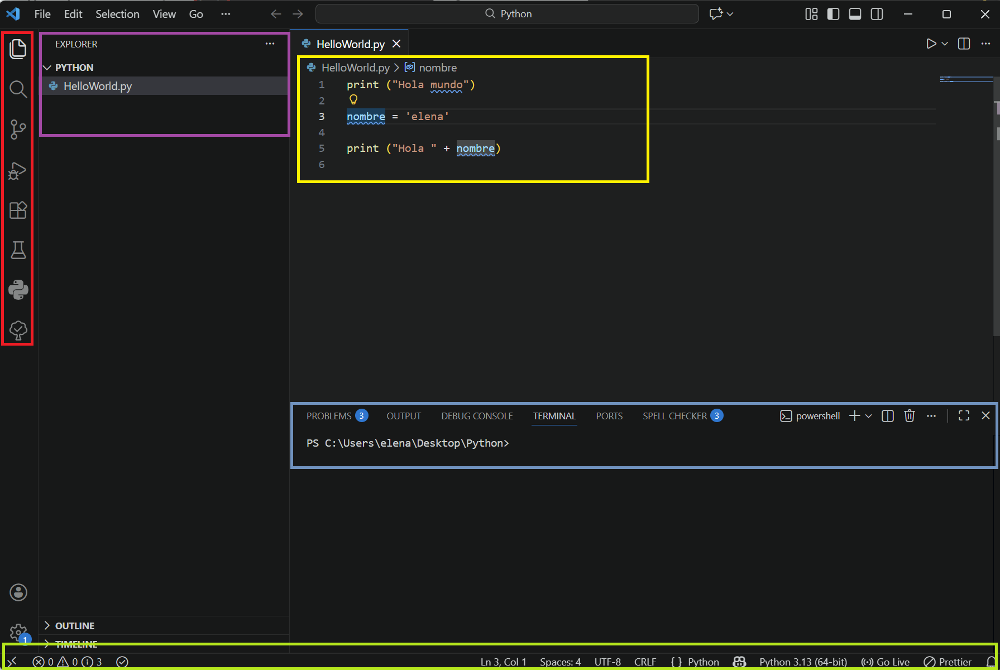
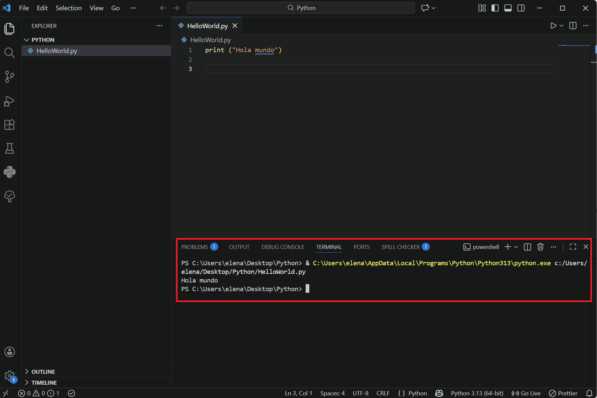
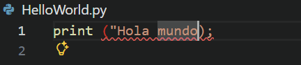
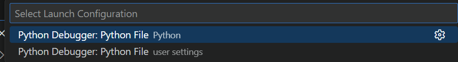
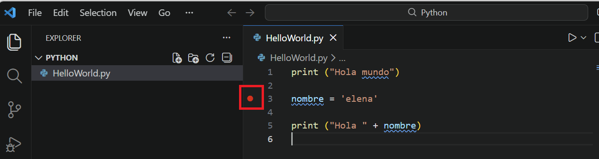
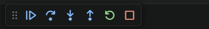
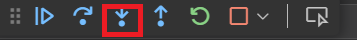
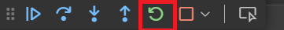
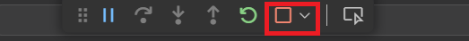
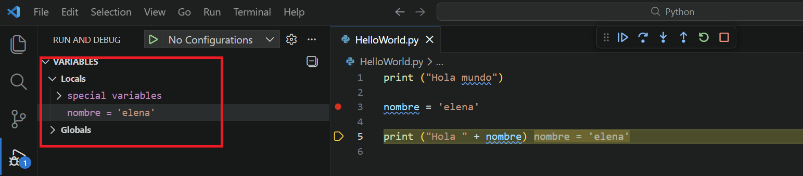

Python¶
Python¶
Python es un lenguaje de programación creado a principios de los años 90 por Guido van Rossum. Conocido por su sintaxis sencilla y legible, su principal objetivo es ser fácil de aprender y usar, lo que lo convierte en una opción popular tanto para principiantes como para desarrolladores experimentados.
Python es ampliamente utilizado en áreas como:
- Desarrollo web: para crear páginas y aplicaciones web.
- Ciencia de datos: para analizar grandes cantidades de información.
- Inteligencia artificial: para crear sistemas inteligentes.
- Automatización: para realizar tareas repetitivas de forma automática.
- Desarrollo de software: para desarrollar programas de escritorio o móviles.
Su nombre es un tributo al grupo de comedia Monty Python, y entre sus muchas virtudes, podemos destacar las siguientes:
- Es un lenguaje multiplataforma, con el que podemos desarrollar aplicaciones de todo tipo (escritorio, web, etc) en diferentes sistemas (Windows, Mac, Linux).
- Es un lenguaje interpretado (no compilado), y puede utilizarse como un lenguaje de script en terminal, como ocurre con Perl, PowerShell u otros lenguajes de script.
- Utiliza tipado dinámico de datos, es decir, no existen tipos de datos implícitos, ni tenemos que indicarlos al utilizar las variables en el programa. A medida que asignamos valores a las variables, éstas toman el tipo de dato adecuado.
- Podemos utilizar Python tanto desde una perspectiva orientada a objetos (usando clases y objetos) como sin dicha perspectiva (sin necesidad de clases).
- Dispone de multitud de paquetes o librerías (las herramientas y utilidades que nos ofrece por defecto), que puede ser extendida con una de las ofertas de bibliotecas de programación más grandes del mundo, creadas y mantenidas por una extensa comunidad de programadores.
Entorno de Desarrollo Integrado (IDE)¶
Antes de comenzar a ver código, necesitamos instalar un IDE –Integrated Development Environment– o «Entorno de Desarrollo Integrado».
Este tipo de programas no es más que un editor de texto, como Microsoft Word o Google Docs, pero específicamente diseñado para la escritura de código con lo que tiene integrado herramientas que agilizan la tarea de programar y facilitan la vida al programador como:
- Resaltan las palabras clave en distintos colores para facilitar la edición de código,
- Autocompleta las instrucciones.
- Ofrecen consejos de ejecución.
Exiten muchos IDE en el mercado. El que nosotros vamos a usar en clase se llama Visual Studio Code y es uno de los entornos de programación más usado actualmente para el desarrollo de programas con Python a nivel profesional.

Las partes en las que está compuesto nuestro IDE son:
- Editor: Es la parte central, resaltado en amarillo, es donde estarán nuestros archivos para editarlos. El entorno nos permite tener varios archivos abiertos en diferentes pestañas, así como dividir la ventana del editor en tres para visualizar dos archivos a la vez.
- Panel lateral: En este panel, resaltado en lila, encontramos diferentes vistas como el explorador de archivos, en el caso de tener control de versiones también podremos ver los archivos que han cambiado con respecto al último commit, o la vista de búsqueda, depuración y extensiones.
- Panel de actividades: barra que se encuentra a la izquierda donde encontraremos 5 grandes botones, resaltado en rojo, que nos permitirá cambiar entre las diferentes vistas: Explorador, Búsqueda, Control de versiones, Depuración y Extensiones. Estas son las que aparecerán en el panel lateral.
- Barra de estado: Esta barra situada en la parte inferior de la aplicación,, resaltado en verde, muestra diferente información como es el número de líneas del archivo y caracteres, o información relativa con el control de versiones.
- Paneles: En la parte inferior del editor, resaltado en azul, se muestran los diferentes paneles donde se recoge información acerca de la depuración, errores, avisos o un terminal de texto integrado.
Ordenadores Aula
Los ordenadores del aula deberían tener Visual studio por defecto, en caso de no ser así se instalará mediante la Zero Center. Seleccionar FP programas y seguidamente Visual Studio Code para windows.

Warning
No se debe instalar ningún programa ni aplicación que no haya sido indicado expresamente por el profesor, ya que puede provocar incompatibilidades con otras aplicaciones del sistema.
Si algún alumno inhabilita su PC por instalar software no autorizado, será responsable de las consecuencias.
Módulos¶
Visual Stucio Code nos ofrece la posibilidad de trabajar con infinitos lenguajes de programación. Para ello, simplemente debemos instalar la extensión del lenguaje requerido.
Para poder trabajar con Python, debemos instalar la extensión de Python.

Proyectos¶
Visual Stucio Code organiza los códigos en proyectos estructurados en carpetas y almacenados en nuestro dispositivo.
A continuación, veremos cómo podemos abrir un proyecto de Python.

Creamos la carpeta donde se irán guardando nuestros programas (por ejemplo HelloWorldPyhon).

Creamos un nuevo archivo con extensión .py

Escribimos un código sencillo print("Hola mundo"). Guardamos el fichero y ejecutamos el código con el botón derecho sobre el código Ejecutar Python.

Obteniendo la salida en el terminal.

Depuración¶
En ocasiones es posible que observemos errores o comportamiento incorrectos en nuestro algoritmo.
-
Errores de sintaxis
El propio entorno de desarrollo -IDE, como VSCode- nos marca los errores de sintaxis con llamativos mensajes en rojo. La solución pasa por escribir bien el código.

Ejemplo error sintaxis -
Errores código
Cuando el código no tiene problemas de sintaxis pero no ofrece el resultado esperado debemos emplear el depuración o «debugging» para encontrar y corregir errores –bugs– en el código.
La depuración implica examinar el código, ejecutarlo paso a paso para identificar dónde y por qué ocurren los errores, y corregirlos.
En VSCode, podemos acceder a las herramientas de depuración con el icono del «bicho» -bug- (situado en la parte izq derecha del programa
 ) :
) :
Debugger Seguidamente, debemos seleccionar el depurador con el que vamos a trabajar.

Debugger Cuando pulsamos en la ejecución del programa en modo depuración, nos permiten una ejecución manual paso a paso.
Una buena manera de hacerlo es situar un «breakpoint» o punto de ruptura. Se trata de marcar una línea de código donde queremos que se pare la ejecución del programa. Esto lo hacemos pulsando con el ratón junto al número de línea que queremos marcar (aparecerá un punto rojo).

Breakpoint Una vez marcadas las líneas donde queremos que el programa pare, lo ejecutamos en modo depuración. El programa comenzará a ejecutarse y se parará en cada breakpoint. Para avanzar podemos utilizar una variedad de iconos disponibles para avanzar paso a paso o para la ejecución.

Barra depuración Para ejecutar una línea más debemos presionar sobre el siguiente icono:

Ejecutar siguiente línea Si quisiéramos modificar el código y volver a ejecutarlo simplemente deberíamos darle al siguiente botón:

Volver a ejecutar las instrucciones Para finalizar la ejecución debemos pinchar sobre el siguiente icono:

Parar debugger En lal zona de la izquierda aparece, el inspector de variables donde aparecerán los valores de las variables y estructuras de datos empleadas en el código, en ese momento de la ejecución, y los valores que tienen en ese punto.

Inspector de variables
🎬 En el siguiente vídeo se explica cómo configura Visual Studio Code para Python, crear proyectos paso a paso y depurarlos en su ejecución.
Referencias¶
Actividades¶
📝 AA4.8 Primeros pasos con Python¶
(C.ESP1 / CE1.2 / IC1-3p)
- Crea una carpeta de proyectos llamado Python en una ubicación de tu elección en tu sistema.
- Crea el archivo
HolaMundo.py - Copia siguiente código :
print("Hola mundo") - Ejecútalo mediante el primer método explicado en los apuntes.
-
Captura el código y la salida por terminal.
-
Crea un segundo archivo denominado
debugger.py. - Copia el siguiente código
print ("Hola mundo") nombre = 'Elena' print ("Hola " + nombre) - Crea un break point en la variable nombre.
- Ejecutar el debbugger.
-
Ejecuta el código paso a paso y captura, el código, el valor de la variable obtenido en el inspector de variables y el resultado por terminal.
-
Crea un tercer archivo denominado
edad.py. - Copia el siguiente código indicando tu nombre y edad.
print ("Hola mundo") nombre = 'TU NOMBRE' # Escribe aquí tu nombre edad = 'TU EDAD' # Escribe aquí tu edad print ("Hola " + nombre + " tienes " + edad + " años") - Crea un break point en la variable edad.
- Ejecutar el debbugger.
- Ejecuta el código paso a paso y captura el código, el valor de la variable obtenido en el inspector de variables y el resultado por terminal.
La entrega en aules será una captura de pantalla de tus tres programas.
📝 AA4.9 Primeros pasos con Python II¶
(C.ESP1 / CE1.2 / IC1-3p)
Crea el archivo Edad.py con el siguiente código y ejecútalo.
edad = int(input("Introduce tu edad: "))
if edad >= 18:
print("Eres mayor de edad.")
else:
print("Eres menor de edad.")
print("Programa terminado.")
La entrega en aules será una captura de pantalla de tu programa.